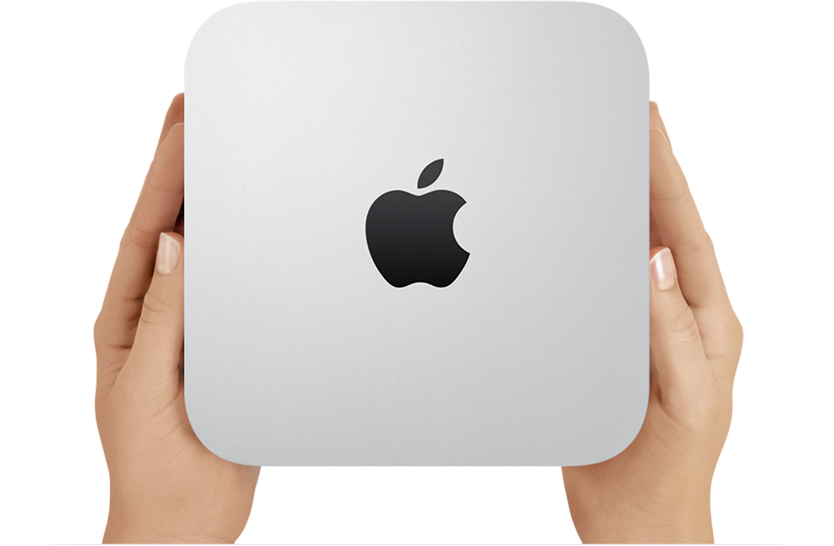
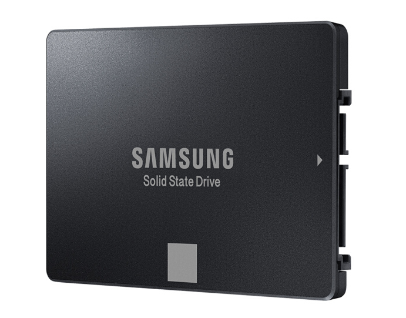
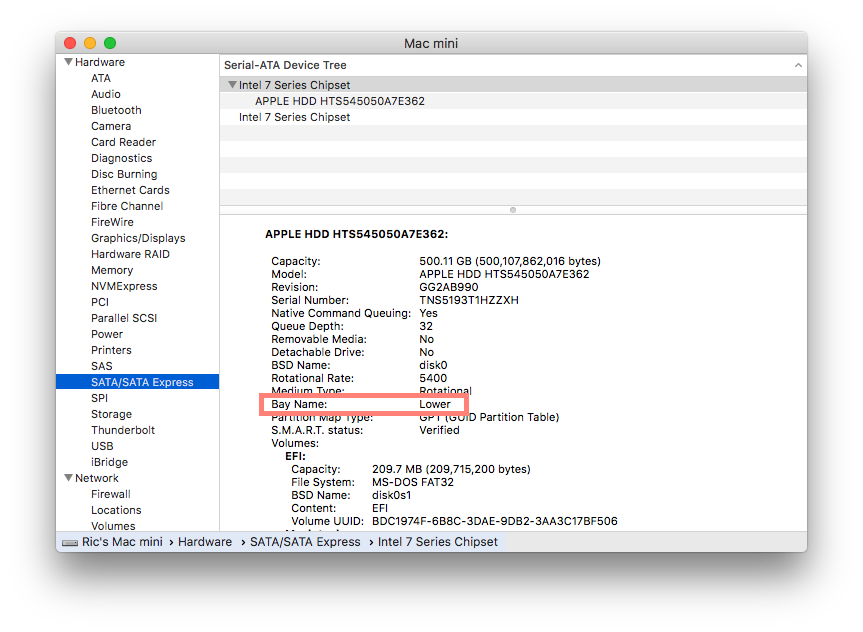
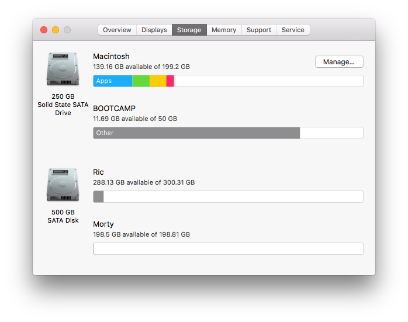

在 2014 年的暑假，我购入了 Apple 的 Mac mini Late 2012，作为 Objective-C 编程入门的工具。当时我刚从初中毕业，高中也快要开学。而要去的高中是住校制，所以算下来，三年里用这个电脑的时间实在是很少。

买来电脑不久我就在 Mac 上装了双系统，这样我不在家的时候爸也可以用来办公——他不习惯 macOS 的操作逻辑（那时还叫做 Mac OS X）。
Mac mini 作为一款 Mac 系列的入门机型，以极低的价格吸引了我。但是说实话，在较低配置下，macOS 的使用体验真的很一般（尤其是和同机安装的 Boot Camp Windows 对比）。
转眼间三年过去了，我就要踏入大学的校门。我想大一先不购买笔记本电脑，把我的 Mac mini 带走，然后配一个显示器，作为日常使用。
然而电脑的性能成为了我日常使用的瓶颈（ 没错，配备第三代 i5 3210m 处理器的 Mac mini 在使用 macOS 时就是如此让人难以忍受）。所以自然就想到要在机身内部的空仓位处加一块 SSD 作为系统盘来提升体验。
经过一番查询过后，我以 ¥689 的价格在京东上购入了 Samsung 850 EVO 250G SATA3（京东自营的发货速度实在没得说），开始着手拆机和装系统。

1.拆机
在购买硬盘之前，我曾试着把 Mac mini 完整地拆解过一次，顺便验证硬盘是在 upper 还是 lower 仓位（这一点很重要，在淘宝上买硬盘线时一定要注意不要买错了）。
另外，如果不想拆机的话，也可以在 macOS 的 System Information 中查看。

拆机时确实是遇到一些小困难的，不过都不太严重，参考了网上的教程（注意有软广），最有用的是一个视频教程，很详细（但是居然找不到了！没关系，以后找到的话会放在文章里的）。
2.系统
在拆机前，我用移动硬盘做了 Time Machine 的备份，所以打算在换上 SSD 之后，直接清空所有数据重新安装系统。
然而在用 U 盘制作系统安装盘的时候却遇到了重重障碍。先是使用 DiskMaker X 制作时报错（在官网 Q&A 里也没有解决方案），然后用命令行的方法，又因为太慢而且没有进度条显示所以放弃，改用网络下载。
奇怪的是，我们家网速平时并不是很快，但是在下载 macOS 系统时总是很快，大概一个多小时就下载完成，一番设置安装完成后就开始了飞速的体验（对于之前的 Mac mini 来说是飞速，但实际上也只是达到了 Windows 正常使用不卡顿的程度）。

Tips
- 拆机时一定要胆大心细，有些地方该用力时就要用力，但一定不要用错地方；
- SSD 安装过以后，请在系统中通过以下命令打开 Trim 设置；
sudo trimforce enable
- 根据网上的测评，合并为 Fusion Drive 后并没有出现 Apple 官方宣称的「自动移动常用文件到SSD」效果，所以我并没有选择合并硬盘（还有一个原因是我试了几种方法都没有合并成功……）。
后记
可以这样说，用了 SSD 以后，我最大的感受就是——我之前是多么有耐心。
Mac mini Late 2012 是目前为止（2017.9.8）最具性价比的一款入门级 Mac。
我觉得我的 Mac mini 可以再战四年（以后可能会加两个内存条）。